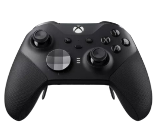

Xbox Elite 2
Precio: $849.990
Plataforma: Xbox y PC
Descripción del Xbox Elite 2
El Xbox Elite 2 es el mando premium diseñado para jugadores que buscan un control total y una experiencia personalizada. Con opciones de ajuste de tensión en los joysticks, empuñaduras de goma texturizada, y múltiples botones de perfil intercambiables, el Elite Series 2 ofrece la mayor flexibilidad y rendimiento en el juego. Además, su batería recargable de larga duración y la conectividad tanto con Xbox como con PC hacen de este mando una excelente opción para gamers exigentes.
Características:
- Joysticks ajustables con tensiones personalizables.
- Empuñaduras de goma texturizada para mayor comodidad.
- Batería recargable de larga duración (hasta 40 horas de juego).
- Botones y palancas intercambiables para adaptarse a diferentes estilos de juego.
- Conexión inalámbrica o por cable con Xbox y PC.
- Diseño ergonómico y duradero.
Imágenes del Xbox Elite 2


Especificaciones del Xbox Elite 2
- Conexión: Inalámbrica y por cable (USB-C)
- Compatibilidad: Xbox One, Xbox Series X|S, PC
- Batería: Recargable (hasta 40 horas de duración)
- Joysticks: Ajustables con tensiones personalizables
- Botones: Intercambiables para personalizar la experiencia
- Dimensiones: 10.4 x 10.6 x 6.7 cm